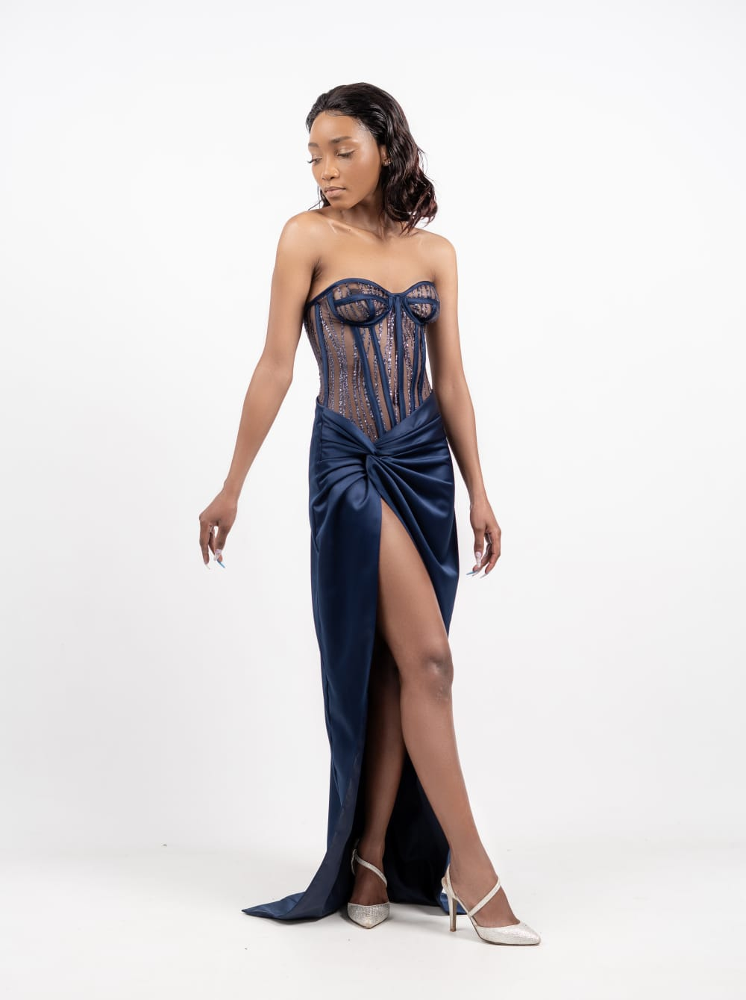

Jane.M Atelier, Maseru, Lesotho
Evening gowns
for the moment.
Statement made-to-measure evening gowns by Jane.M Atelier in Maseru, tailored for your event, movement and personal style.
Book a consultation
An evening gown should hold its own in the room while allowing you to move with confidence. Jane.M Atelier creates made-to-measure gown directions in Maseru for galas, dinners, celebrations and occasions that call for a considered finish.
The design conversation can cover silhouette, draping, corsetry, sleeves, length, coverage and the balance between visual impact and comfort. A collection look can be a useful starting point, but every final gown is refined around the wearer and event.
Measurements and fittings guide the final fit. Fabric is selected separately to suit your design and budget, followed by a confirmed workmanship quotation once the design and construction details are agreed.
Start with your ideas
Not sure what to wear?
Create a private, designer-ready brief before your consultation.
Your next move
Plan your next step
Consultation notes
Questions, answered.
Can an evening gown include corsetry or draping?
Yes. Jane.M can discuss corsetry, draping and other visible design directions in relation to your occasion and comfort.
What does workmanship pricing include?
Workmanship is assessed around the agreed silhouette, complexity and finishing. Fabric is selected separately to suit the design and budget.
How do I begin?
Start with Style Studio, a collection look or a WhatsApp consultation with your event date and ideas.